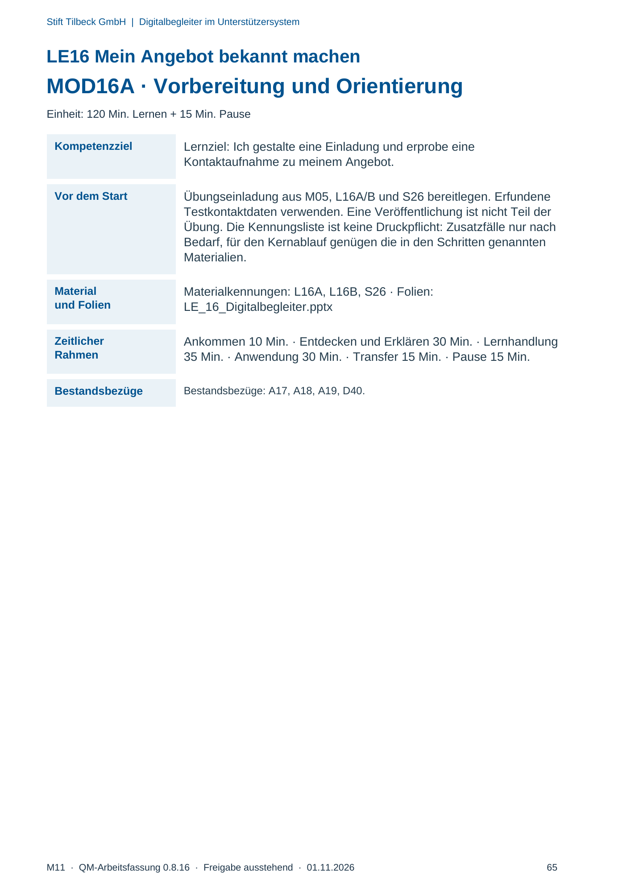
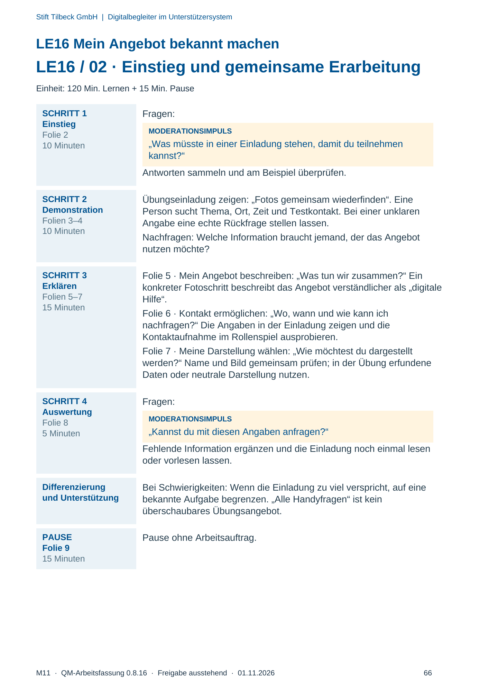
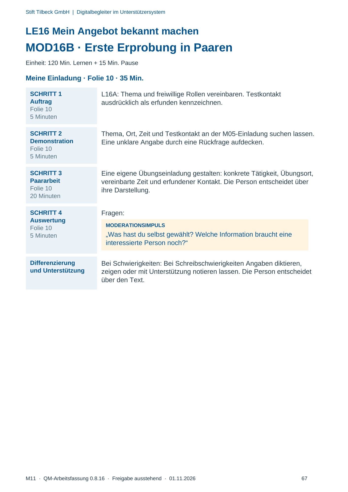
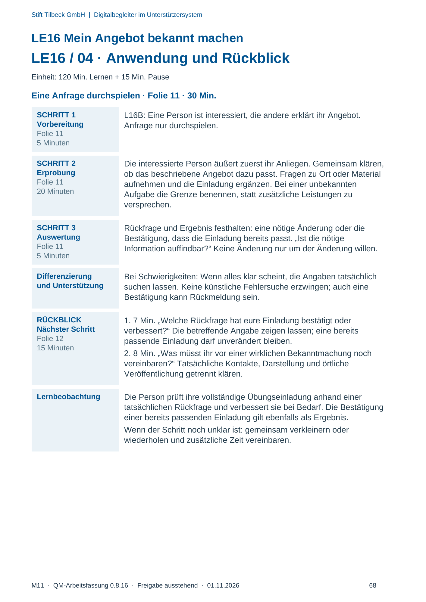

M11 · Originalseite 65, 66, 67, 68
Durchführungshilfe
Gezielte Original-Druckauswahl.
Fragen und Ankreuzfelder werden auf dem Ausdruck bearbeitet. Die Lesefassung speichert keine Antworten.
Lesefassung · Seite 65
Stift Tilbeck GmbH | Digitalbegleiter im Unterstützersystem
M11 · QM-Arbeitsfassung 0.8.16 · Freigabe ausstehend · 01.11.2026 65
LE16 Mein Angebot bekannt machen
MOD16A · Vorbereitung und Orientierung
Einheit: 120 Min. Lernen + 15 Min. Pause
Kompetenzziel Lernziel: Ich gestalte eine Einladung und erprobe eine
Kontaktaufnahme zu meinem Angebot.
Vor dem Start Übungseinladung aus M05, L16A/B und S26 bereitlegen. Erfundene
Testkontaktdaten verwenden. Eine Veröffentlichung ist nicht Teil der
Übung. Die Kennungsliste ist keine Druckpflicht: Zusatzfälle nur nach
Bedarf, für den Kernablauf genügen die in den Schritten genannten
Materialien.
Material
und Folien
Materialkennungen: L16A, L16B, S26 · Folien:
LE_16_Digitalbegleiter.pptx
Zeitlicher
Rahmen
Ankommen 10 Min. · Entdecken und Erklären 30 Min. · Lernhandlung
35 Min. · Anwendung 30 Min. · Transfer 15 Min. · Pause 15 Min.
Bestandsbezüge Bestandsbezüge: A17, A18, A19, D40.
Originalseite ansehen

Lesefassung · Seite 66
Stift Tilbeck GmbH | Digitalbegleiter im Unterstützersystem
M11 · QM-Arbeitsfassung 0.8.16 · Freigabe ausstehend · 01.11.2026 66
LE16 Mein Angebot bekannt machen
LE16 / 02 · Einstieg und gemeinsame Erarbeitung
Einheit: 120 Min. Lernen + 15 Min. Pause
SCHRITT 1
Einstieg
Folie 2
10 Minuten
Fragen:
MODERATIONSIMPULS
„Was müsste in einer Einladung stehen, damit du teilnehmen
kannst?“
Antworten sammeln und am Beispiel überprüfen.
SCHRITT 2
Demonstration
Folien 3–4
10 Minuten
Übungseinladung zeigen: „Fotos gemeinsam wiederfinden“. Eine
Person sucht Thema, Ort, Zeit und Testkontakt. Bei einer unklaren
Angabe eine echte Rückfrage stellen lassen.
Nachfragen: Welche Information braucht jemand, der das Angebot
nutzen möchte?
SCHRITT 3
Erklären
Folien 5–7
15 Minuten
Folie 5 · Mein Angebot beschreiben: „Was tun wir zusammen?“ Ein
konkreter Fotoschritt beschreibt das Angebot verständlicher als „digitale
Hilfe“.
Folie 6 · Kontakt ermöglichen: „Wo, wann und wie kann ich
nachfragen?“ Die Angaben in der Einladung zeigen und die
Kontaktaufnahme im Rollenspiel ausprobieren.
Folie 7 · Meine Darstellung wählen: „Wie möchtest du dargestellt
werden?“ Name und Bild gemeinsam prüfen; in der Übung erfundene
Daten oder neutrale Darstellung nutzen.
SCHRITT 4
Auswertung
Folie 8
5 Minuten
Fragen:
MODERATIONSIMPULS
„Kannst du mit diesen Angaben anfragen?“
Fehlende Information ergänzen und die Einladung noch einmal lesen
oder vorlesen lassen.
Differenzierung
und Unterstützung
Bei Schwierigkeiten: Wenn die Einladung zu viel verspricht, auf eine
bekannte Aufgabe begrenzen. „Alle Handyfragen“ ist kein
überschaubares Übungsangebot.
PAUSE
Folie 9
15 Minuten
Pause ohne Arbeitsauftrag.
Originalseite ansehen

Lesefassung · Seite 67
Stift Tilbeck GmbH | Digitalbegleiter im Unterstützersystem
M11 · QM-Arbeitsfassung 0.8.16 · Freigabe ausstehend · 01.11.2026 67
LE16 Mein Angebot bekannt machen
MOD16B · Erste Erprobung in Paaren
Einheit: 120 Min. Lernen + 15 Min. Pause
Meine Einladung · Folie 10 · 35 Min.
SCHRITT 1
Auftrag
Folie 10
5 Minuten
L16A: Thema und freiwillige Rollen vereinbaren. Testkontakt
ausdrücklich als erfunden kennzeichnen.
SCHRITT 2
Demonstration
Folie 10
5 Minuten
Thema, Ort, Zeit und Testkontakt an der M05-Einladung suchen lassen.
Eine unklare Angabe durch eine Rückfrage aufdecken.
SCHRITT 3
Paararbeit
Folie 10
20 Minuten
Eine eigene Übungseinladung gestalten: konkrete Tätigkeit, Übungsort,
vereinbarte Zeit und erfundener Kontakt. Die Person entscheidet über
ihre Darstellung.
SCHRITT 4
Auswertung
Folie 10
5 Minuten
Fragen:
MODERATIONSIMPULS
„Was hast du selbst gewählt? Welche Information braucht eine
interessierte Person noch?“
Differenzierung
und Unterstützung
Bei Schwierigkeiten: Bei Schreibschwierigkeiten Angaben diktieren,
zeigen oder mit Unterstützung notieren lassen. Die Person entscheidet
über den Text.
Originalseite ansehen

Lesefassung · Seite 68
Stift Tilbeck GmbH | Digitalbegleiter im Unterstützersystem
M11 · QM-Arbeitsfassung 0.8.16 · Freigabe ausstehend · 01.11.2026 68
LE16 Mein Angebot bekannt machen
LE16 / 04 · Anwendung und Rückblick
Einheit: 120 Min. Lernen + 15 Min. Pause
Eine Anfrage durchspielen · Folie 11 · 30 Min.
SCHRITT 1
Vorbereitung
Folie 11
5 Minuten
L16B: Eine Person ist interessiert, die andere erklärt ihr Angebot.
Anfrage nur durchspielen.
SCHRITT 2
Erprobung
Folie 11
20 Minuten
Die interessierte Person äußert zuerst ihr Anliegen. Gemeinsam klären,
ob das beschriebene Angebot dazu passt. Fragen zu Ort oder Material
aufnehmen und die Einladung ergänzen. Bei einer unbekannten
Aufgabe die Grenze benennen, statt zusätzliche Leistungen zu
versprechen.
SCHRITT 3
Auswertung
Folie 11
5 Minuten
Rückfrage und Ergebnis festhalten: eine nötige Änderung oder die
Bestätigung, dass die Einladung bereits passt. „Ist die nötige
Information auffindbar?“ Keine Änderung nur um der Änderung willen.
Differenzierung
und Unterstützung
Bei Schwierigkeiten: Wenn alles klar scheint, die Angaben tatsächlich
suchen lassen. Keine künstliche Fehlersuche erzwingen; auch eine
Bestätigung kann Rückmeldung sein.
RÜCKBLICK
Nächster Schritt
Folie 12
15 Minuten
1. 7 Min. „Welche Rückfrage hat eure Einladung bestätigt oder
verbessert?“ Die betreffende Angabe zeigen lassen; eine bereits
passende Einladung darf unverändert bleiben.
2. 8 Min. „Was müsst ihr vor einer wirklichen Bekanntmachung noch
vereinbaren?“ Tatsächliche Kontakte, Darstellung und örtliche
Veröffentlichung getrennt klären.
Lernbeobachtung Die Person prüft ihre vollständige Übungseinladung anhand einer
tatsächlichen Rückfrage und verbessert sie bei Bedarf. Die Bestätigung
einer bereits passenden Einladung gilt ebenfalls als Ergebnis.
Wenn der Schritt noch unklar ist: gemeinsam verkleinern oder
wiederholen und zusätzliche Zeit vereinbaren.
Originalseite ansehen
